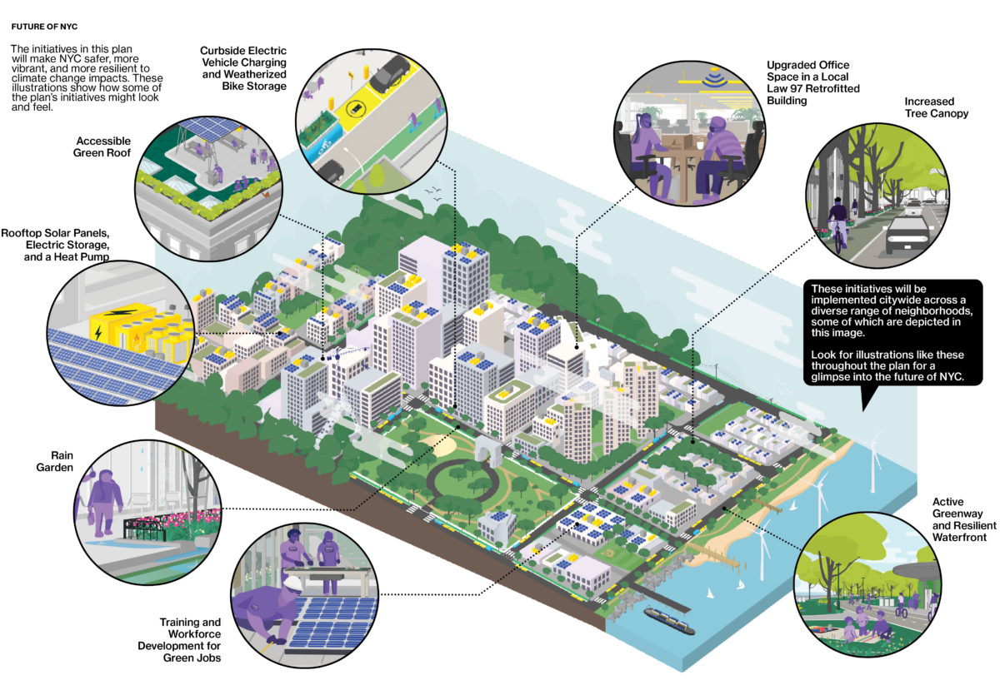
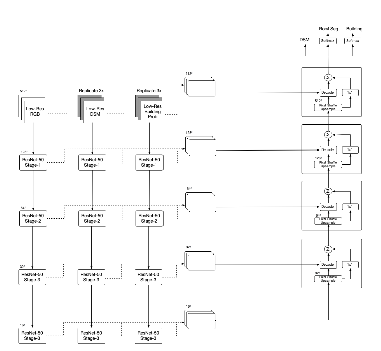
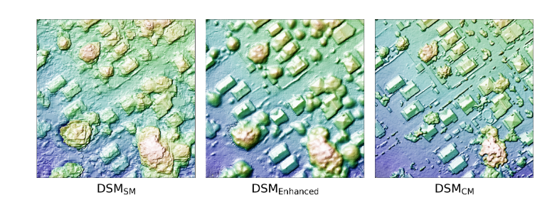
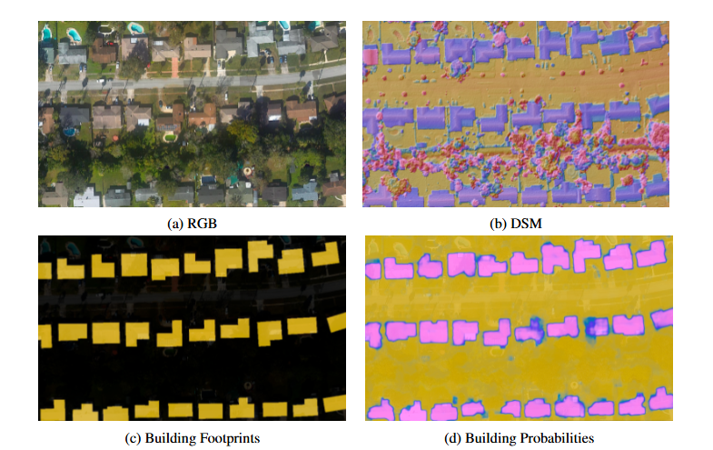
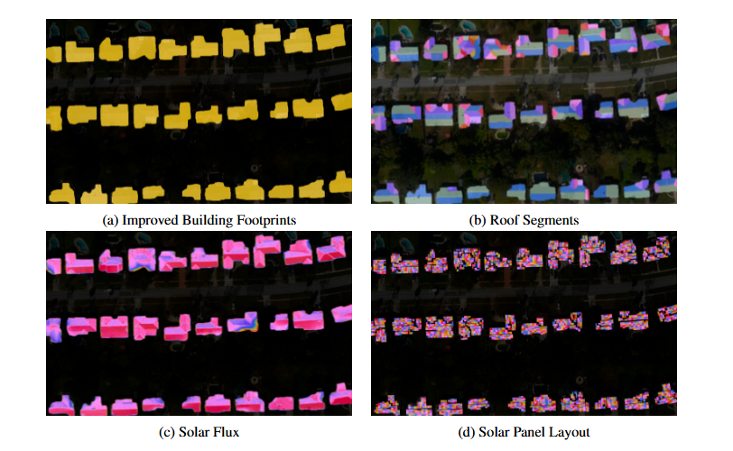

5 Policy
Rooftop Solar Potential and Policy–Technology Coupling in New York City
5.1 Introduction
With buildings contributing approximately 70% of New York City’s greenhouse gas emissions, the Climate Mobilization Act and Local Law 97 (Greenhouse Gas Emissions Reduction) have established a legal mandate to achieve a 50% reduction in government operational emissions by 2030.
To support this transition, Google Project Sunroof utilizes machine learning and aerial imagery to quantify technical solar potential by transforming high-resolution aerial data into a verifiable evidence base for policy justification.
For example, similar assessments in the United States have utilized aerial imagery to classify rooftops by size, shading, and insolation to determine adoption potential. By enforcing Local Laws 92 and 94 (Solar & Green Roofs), NYC successfully couples Earth Observation technology with regulatory frameworks to transform passive rooftops into strategic spatial assets and regulated distributed energy infrastructure.

Source: PlaNYC 2023 Full Report5.2 Problem & Solution
| The Problem | The Solution | Supporting |
|---|---|---|
| Technical Uncertainty: Implementation is marred by challenges in quantifying potential and data accessibility (Mhlanga and Yalciner Ercoskun 2020). | 3D Modeling & ML: Using deep networks to enhance DSMs and calculate precise solar flux (Goroshin et al. 2023). | Mhlanga & Ercoşkun (2020) |
| Information Gap: Homeowners face uncertainty about roof viability or financial savings (Lemay, Wagner, and Rand 2023). | Personalized Evidence: Providing 20-year savings estimates via simple address lookup (Lemay, Wagner, and Rand 2023). | Sunroof Savings Estimator |
| Data Isolation: Traditional assessments lack “planetary-scale” foundations (Gagnon et al. 2016). | Policy Integration: Linking GHI data to mandatory compliance tools like LL97 (“LL97 Greenhouse Gas Emissions Reduction” n.d.). | NREL Technical Report (2016) |
5.3 Policy Context
The energy transition in New York City is driven by a robust hierarchy of strategic mandates, regulatory requirements, and data-driven accountability mechanisms.
| Category | Policy | Content | Impact |
|---|---|---|---|
| Strategic Mandates | Climate Mobilization Act (2019) & PlaNYC (2023) | Establishes a city-wide roadmap to carbon neutrality; operationalized by the Mayor’s Office of Climate and Environmental Justice (MOCEJ). | Prioritizes the maximization of climate infrastructure across the city’s built environment. |
| Regulatory Transformation | Local Laws 92 & 94 (2019) | Mandates “sustainable roofing zones” for all new buildings and major roof renovations. | Legally redefines rooftops as energy infrastructure, requiring solar PV, green roofs, or a hybrid. |
| Carbon Compliance | Local Law 97 (LL97) | Imposes strict carbon caps on large buildings; mandates a 50% emissions reduction for City operations by 2030. | Shifts solar adoption from a voluntary choice to a critical compliance strategy to avoid heavy penalties. |
| Accountability & Scale | Local Law 24 & LL99 (2024) | Requires biennial solar potential assessments for City-owned buildings >10,000 sqft; codifies solar targets. | Establishes legally binding targets: 100 MW on City properties by 2030 and 150 MW by 2035. |
| Barrier Removal | City of Yes for Carbon Neutrality (2023) | Comprehensive modernization of NYC’s Zoning Resolution to support renewable energy. | Eliminates administrative and spatial barriers, simplifying the siting and construction of solar hardware. |
| Social Equity | Environmental Justice (EJ) Framework | Utilizes 45 indicators to identify Disadvantaged Communities (DACs). | Mandates that 55% of solar installations be located within EJ communities to address energy burdens. |
5.4 Earth Observation & Solar Potential Modelling
The transformation of raw aerial imagery into actionable energy intelligence follows a sophisticated five-stage pipeline, primarily driven by deep learning and geometric computer vision (Goroshin et al. 2023).
5.4.1 Google Project Sunroof
For a deeper dive into Google Project Sunroof:
If you enter the address of a residence in a covered region of the US, the Google Project Sunroof website shows you the following estimates:
- How much sunlight the house receives annually
- How much space the roof has for a solar installation
- How much savings, in US dollars, the home can expect over the 20 year life of a solarsystem
- The average monthly electricity bill for homes in your area, which you can adjust for your home
- A recommended size, measured in kilowatts (kW), for a solar system on the house
 Source:
Source: 5.4.2 Technical Workflow
| Step | Phase | Action |
|---|---|---|
| Inputs | Data Ingestion | High-resolution RGB imagery, DSM (Digital Surface Models), building footprints, and classification probabilities. |
| 01 | Building Segmentation | footprints ← SegmentBuildings(RGB, DSM, footprints, probabilities)Refines boundaries and separates individual structures from vegetation. |
| 02 | Roof Geometry | Segment roof DSM into planes: Uses algorithms like RANSAC to identify flat surfaces and remove obstacles (chimneys, HVAC units, vents). |
| 03 | Solar Simulation | Fast Ray-tracing: Efficiently computes annual solar flux by simulating shadows from the surrounding environment (trees, neighboring tall buildings). |
| 04 | System Design | Panel Layout Optimization: Calculates the maximum number of panels that fit on viable planes and predicts the power produced (PVOUT). |
| 05 | Economic Analysis | Financial Calculations: Integrates local utility rates, net metering policies, and incentives to estimate 20-year savings. |
| Outputs | Actionable Intelligence | Potential Solar Power (kW/kWh) and Total Cost Savings ($). |

Source: Goroshin et al. (2023)5.4.3 Multi-modal Data Acquisition and Enhancement
The process begins with the ingestion of high-resolution aerial imagery (RGB), Digital Surface Models (DSM), and Digital Terrain Models (DTM).
- Deep Learning DSM Enhancement: Because high-resolution, centimeter-scale data is often limited, deep learning architectures—specifically a UNet architecture with a ResNet-50 encoder backbone—are used to enhance lower-quality sub-meter DSMs.
- Filling Coverage Gaps: This approach bridges the gap between widely available low-resolution data and the precise spatial detail required to resolve roof features, dramatically increasing the geographic coverage of solar potential estimates.

Source: Goroshin et al. (2023)5.4.4 Roof Segmentation
- Building Footprint Refinement: Initial building footprints are refined using graph-cut algorithms to remove “tree overhangs” and separate individual residential addresses that may appear connected in raw imagery.
- Roof Plane Partitioning: Roof pixels in the DSM are fitted to a set of planar segments using the RANSAC algorithm.
- Obstacle Removal: The segments are refined to identify and exclude small structural features unsuitable for panel installation, such as chimneys, air vents, and air-conditioning units.

Source: Goroshin et al. (2023)5.4.5 Solar Flux and Shading Simulation
This phase quantifies the annual solar energy received by each square meter of the roof, accounting for orientation and environmental factors.
- Irradiance: The system calculates Direct Normal Irradiance (DNI) and Global Horizontal Irradiance (GHI).
- Ray-tracing: Instead of computationally heavy traditional ray-tracing, a linear complexity algorithm is used to simulate hourly shadows cast by the surrounding environment, including trees and neighboring buildings.
- Atmospheric and Thermal Corrections: Factors such as latitude and pitch angle are integrated, and a correction factor for local air temperature and wind speed is applied to account for the decrease in PV efficiency at elevated temperatures.
5.4.6 PV Outcome
The final stage translates physical potential into practical energy output and economic value.
- Optimal Panel Layout: The viable roof area is tiled with virtual panels to maximize both energy production and layout compactness.
- PVOUT Computation: This represents the practical measure of usable energy, factoring in system losses, annual efficiency degradation, and a standard DC-to-AC derate factor (typically 0.85) for inverter conversion.
- Financial Justification: By combining production data with local utility rates, weather patterns, and financial incentives, the tool generates a personalized 20-year savings estimate.

Source: Goroshin et al. (2023)5.5 Policy–Technology Coupling Mechanism
==========================================================
1. FROM DATA TO POLICY JUSTIFICATION
==========================================================
[Aerial Imagery & LiDAR Data]
|
v
{ Machine Learning & 3D Modeling } <-----------+
| |
| (Identify GHI & PVOUT) |
v |
[ Quantified Technical Potential ] |
(NYC: 8.6 GW Potential) |
| |
v |
[ Evidence Base for Policy ] |
| |
===============|==================================|=======
2. FROM POLICY TO IMPLEMENTATION |
===============|==================================|=======
v |
[ Climate Mobilization Act / OneNYC ] |
| |
v |
[ Regulatory Mandates: LL92/94 & LL97 ] |
| |
v |
{ Administrative Filter } | (DSM Enhancement)
/ \ |
(Solar Readiness) (Environmental Justice) |
/ \ |
v v |
[Building-Level] [Targeting DAC] |
[ Deployment ] [ Communities ] |
\ / |
========\==================/======================|=======
3. FEEDBACK LOOP / |
=========\==============/=========================|=======
\ / |
v v |
[ Monitoring via NYC Dashboard ] |
| |
| (Validation Data) |
v |
[ Refined Deep Learning Models ] --------------+
==========================================================Inputs: RGB, DSM, building footprints, and probabilities
1. SegmentBuildings: Identify precise structure boundaries.
2. Loop for each building: - Partition DSM into roof planes; filter out obstructions. - Execute fast ray-tracing for solar flux (shading analysis). - Tile panels to compute potential power yield. - Run financial models based on local electricity tariffs.
Outputs: Potential solar power and projected cost savings.